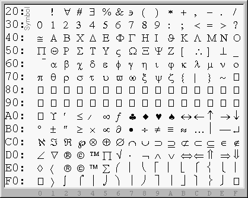
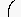
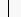
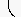

| Default Recommended MathFonts |
|---|
|
Encoding MathFonts for Mozilla
Fonts aimed at representing standardized codesets (a.k.a. charsets) such as ASCII or the ISO-8859-x series are expected to encode a list of glyphs of known characters at known positions. Depending on the technology being used, the font data file can be made self-contained, with this encoding metadata implicit (i.e., easy to infer) or embedded in the font, especially when it supports several codesets. From this it follows that standardization enables processing such fonts in a consistent and optimized manner.
Other special purpose fonts that are not geared toward these standardized codesets can have any 'glyphshape' at any position. Consequently, applications wishing to access the glyphshapes need separate encoding tables that provide a mapping from characters to the indices of the desired glyphshapes. Such fonts are known as 'symbol fonts', though other terminologies like 'symbolic fonts' are sometimes used to avoid confusion with the 'Symbol' font which is just an example of many such fonts. Dingbats and scientific fonts are other noteworthy examples. Generally, mathematical typesetting packages embed pre-built font encoding tables for fonts that they intent to support. In particular, this is done in Mozilla using the ucvmath module in conjunction with MathFont Property Files in a way that essentially allows supporting any mathematical font( * ). Assumptions about fonts are not hard-coded at the core of the MathML engine. Even the set of stretchy characters is extensible externally. By following the scheme to be described later, it would be possible for you to setup additional fonts to be used to render MathML in Mozilla.
An important outcome of the MathML specification has been the enlisting of a wide array of mathematical and technical symbols in the Unicode set. The fact that imath has a single code point whereas jmath requires a combined pair of code points is enigmatic, but that could be illustrative of the difficulties in securing those code points. The universality of the approved code points is key to producing, processing, and interchanging portable scientific and technical documents in contexts other than, and beyond MathML itself. As for fonts, it now becomes technically possible to produce a single portable Unicode font that could contain the most widely used characters in computerized scientific typesetting. It might nevertheless be the case that consideration for legacy software packages (e.g., TeX) that expect smaller partitioned sets may hold back the production of unified font sets for quite some time. Besides, there is an underlying complication in mathematical typesetting with respect to the so-called stretchy characters. These are characters that can be rendered differently depending on their surrounding context. There is a one-to-many mapping between a stretchy character and its associated glyphshapes, and in fact, the final rendering of a stretchy character may require assembling several glyphshapes at once. Since Unicode only assigns one slot per character, the one-to-many relationship needs special handling by software. The extra glyphshapes are usually assigned to the PUA (the Unicode's Private Use Area 0xE000-0xF8FF which is exempted from receiving any official assignments and is left to applications for their internal use). These observations make it likely that mapping tables are still going to be around for some time -- at least until such a time where advanced built-in font technologies enable embedding the subtle and delicate mechanism of stretching math symbols within the font.
MathFont Encoding Tables
For Mozilla to support an existing symbolic mathematical font, the first step is to setup a MathFont Encoding Table. This is essentially a lookup table that provides a mapping from characters to the indices of the desired glyphshapes within the font. As a result, building such a table requires visualizing the font's character map. We shall illustrate this building process through a representative example. Consider the character map of the Symbol font given below.

The resulting encoding table is listed as (see full listing):0x20 0x0020 #Space 0x21 0x0021 #Exclamation mark 0x22 0x2200 #For all ...etcThat is useful and necessary, but not really interesting. The interesting parts are those associated to stretchy characters such as that inside block 0xE0-0xEF:
0xE0 0x22C4 #Diamond operator 0xE1 0x2329 #Left-pointing angle bracket 0xE2 0xF8E8 #Registered sign sans serif [?entity] 0xE3 0xF8E9 #Copyright sign sans serif [?entity] 0xE4 0xF8EA #Trade mark sign sans serif [?entity] 0xE5 0x2211 #N-ary summation 0xE6 0x0028:T #Left parenthesis top 0xE7 0x0028:G #Left parenthesis extender 0xE8 0x0028:B #Left parenthesis bottom 0xE9 0x005B:T #Left square bracket top 0xEA 0x005B:G #Left square bracket extender 0xEB 0x005B:B #Left square bracket bottom 0xEC 0x007B:T #Left curly bracket top 0xED 0x007B:M #Left curly bracket mid 0xEE 0x007B:B #Left curly bracket bottom 0xEF 0x007B:G, 0x007D:G #Curly bracket extenderThe letters 'T', 'L', 'M', 'B', 'R', and 'G' stand, respectively, for 'T'op, 'L'eft, 'M'iddle, 'B'ottom, 'R'ight, and 'G'lue. These are annotations used to indicate glyphs that should be assembled in order to build larger variants of a character. For instance lines 0xE6-0xE8 mean that a larger left parenthesis can be obtained by the vertical juxtaposition of the 'T'op, zero or many 'G'lue, and the 'B'ottom'. This is outlined below:
|  | 0xE6 0x0028:T #Left parenthesis top | Combining without spacing yields: |
  |
| 0xE7 0x0028:G #Left parenthesis extender | |||
| 0xE8 0x0028:B #Left parenthesis bottom |
When 'M'iddle is specified (as in line 0xED), the repeatable glue simply has to be inserted between both ends. Sometimes glyphs may not fit at their full extent in the required space and depending on their shape, Mozilla' stretching code may clip to tolerate a small amount of overlap between the parts. In general the 'T'op of one character could be labeled as the 'B'ottom of another one, and so on. The full listing shows how extensible arrows and curly brackets are defined according to these principles. For consistency of appearance, extensible characters are defined with glyphs purposely designed to be used to that effect. There is therefore an intrinsic limitation on the possible combinations within a single font. In some circumstances, though rare, font designers put the glyphs needed to stretch a character in different families. But this is a matter of no concern here -- this additional information should instead be specified in the MathFont Property Files to be introduced below.
A MathFont Encoding Table is meant to be processed automatically. It is a set of lines, each with space-separated fields. The full format is as follows:
- The first column is used as a marker. If the dash '-' is present,
the entry is skipped. Explicitly listing some empty slots in the
character map and flagging them with the dash '-' can be of great help
when inspecting a table for verification.
- The second field is the desired glyph index (i.e., encoding
point).
- The third field is either:
- the keyword '>PUA' to indicate that there is no approved Unicode point for that glyph, and so it should be made accessible via an assignment to the PUA, or
- a comma-separated list of one or more annotated Unicode points:
0xNNNN:x {,
0xNNNN:x ...}.
The list can be split over many lines provided that
each preceding line is ended with a comma.
The expected annotations are:
- Annotations to distinguish variants of larger sizes: 0xNNNN:0, 0xNNNN:1, .... An annotation with digit '0' means that the glyph is of normal-size and can be used in a normal text run. This is the default, i.e., it is assumed when no annotation is specified. An annotation with digit '1' means 'big' (in the terminology of TeX), digit '2' means 'Big', digit '3' means 'bigg', digit '4' means 'Bigg', .... The ordering is relative to the font family.
- Annotations for the parts:
0xNNNN:T,
0xNNNN:L,
0xNNNN:M,
0xNNNN:B,
0xNNNN:R, and
0xNNNN:G.
They respectively mean that the glyph should be used as
'T'op, 'L'eft, 'M'iddle, 'B'ottom, 'R'ight, or as
the repeatable 'G'lue when assembling the character by parts.
In reality, 'T'op is synonym with 'L'eft while 'B'ottom is
synonym with 'R'ight. However, they are used in their respective
situation to draw attention on the direction of the stretching.
- The fourth field is an optional descriptive comment about the character. But if the third field has been marked as '>PUA', this comment field becomes significant. The comment is searched for any '&entity;' that should be associated to the assignment that will be made to the PUA for that glyph. This is also the case for Unicode points in plane 1. Since Mozilla doesn't yet support plane 1 characters like script and fraktur characters, the necessary glyphs are made accessible via assignments to the PUA and these are, in their turn, exposed to users via the entity references of those characters. Ditto for characters with combining diacritical marks. The assignments to the PUA are meant to be kept private within Mozilla and can be (automatically) changed anytime by the script that processes the MathFont Encoding Tables. Searching the code in view of directly using the assignments is strongly discouraged.
MathFont Property Files
Upon setting up a MathFont Encoding Table, the next step is to run the Perl script, encode.pl, to process and convert the table in the compact format expected internally. The script is available in the mathml/tools directory. It is possible to construct the compact format by hand, but this is a tedious and error-prone process. So it is preferable to use the automatic tool and add specific customization to the resulting file afterwards. The Perl script will produce the data needed by the ucvmath module (the ultimate mapping between glyph indices and code points), as well as the data needed by the stretching code (the metadata to guide the stretching process). Additionally, the script will pretty-print its resulting visual encoding map for subsequent verification.
There exists different types of MathFont Property Files. Since more details can be found in these files, only a brief description is provided here.
- mathfont.properties
This file contains the Operator Dictionary which lists, amongst other things, the characters that are entitled to be stretched. The file also gives the default order of fonts with which to attempt the stretching process (this order can be overridden with CSS). The preferred fonts that should be used for particular characters can also be supplied. Other details are available in the file.
- mathfontPUA.properties
This is a central repository to keep track of MathML assignments to the PUA. The repository achieves the dual purpose of keeping track of the mappings associated to the extra glyphs of stretchy characters as well as the mappings of non supported Unicode points such as plane 1 characters. This way, the MathML DTD used by Mozilla can be automatically customized so that the entity references map to the internal PUA code points, thereby allowing users to transparently access the underlying glyphs of the unsupported Unicode points.
- mathfontFontFamily.properties
Here FontFamily is the name of the font associated to the file. The font property file is a set of all the stretchy MathML characters that can be rendered with that font using larger and/or partial glyphs. This is where the annotations are combined together in a much compact manner suitable for efficient handling by the stretching code. Each stretchy character in the font is listed with the four partial glyphs: top (or left), middle, bottom (or right), glue; and the variants of bigger sizes (if any). The essential observation is that direct and indirect references can be used. Looking at mathfontSymbol.properties for example, the first few lines show:# [ T/L | M | B/R | G | size0 ... size{N-1} ] \u0028 = \uF8FF\uFFFD\uF8FF\uF8FF\u0028 # (The code point \uFFFD is a flag used to indicate a position that is not relevant to a character.
The code point \uF8FF is another flag. It means that the needed glyphs are referenced via assignments to the PUA, and the actual assignments can be retrieved in the mathfontPUA.properties file using the keys '\u0028.T', '\u0028.B', and '\u0028.G' respectively. The important remark here is therefore that, the assignments corresponding to glyphs of identical rank are the same, regardless the fonts where they come from. There is no risk of mismatch because the stretching code will select the appropriate font in the device context. If there were glyphs of larger sizes in the font, the code point \uF8FF would have been placed again at their positions, and this would have instructed the stretching code to retrieve the assignments using the keys '\u0028.1', '\u0028.2', .... With this scheme, the number of assignments to the PUA are kept minimum and the overall process can scale remarkably well to accommodate many stretchy characters and fonts. Of course, this scheme also applies if direct glyph indices are instead use. But because Mozilla doesn't have cross-platform rendering APIs based on glyph indices, this alternative hasn't been pursued.
In addition to using the generic indirect reference to the PUA as indicated above, it is also possible to use the annotated keys '\uNNNN.T', etc., themselves, as well as a direct fixed code point '\uNNNN'. Here each key prefix \uNNNN could then be chosen arbitrarily. Using annotated keys allows mixing pieces from different characters without having to create (and worry about) a dependence with the actual values assigned to the PUA for the pieces being mixed. For example, the larger variants of (left/right)ceil/floor in the mathfontSymbol.properties file are obtained by combining the pieces of leftbracket '[' (\u005B) and rightbracket ']' (\u005D) as shown below:
\u2308 = \u005B.T\uFFFD\uFFFD\u005B.G\u2308 # LeftCeiling, lceil \u2309 = \u005D.T\uFFFD\uFFFD\u005D.G\u2309 # RightCeiling, rceil \u230A = \uFFFD\uFFFD\u005B.B\u005B.G\u230A # LeftFloor, lfloor \u230B = \uFFFD\uFFFD\u005D.B\u005D.G\u230B # RightFloor, rfloor
Characters that need to be recursively built from other characters are also supported. For example, characters like overbrace and underbrace in cmex10 have to be built from two half stretchy chars and joined in the middle (TeXbook, p.225). The stretching code can compose several (i.e., 2 or more) child characters in order to render another character. To specify such characters, their list of glyphs in the property file should be given as space-separated segments of glyphs. Each segment gives the four partial glyphs with which to build the child character that will be joined with its other siblings. The mathfontCMEX10.properties file intentionally uses the following slightly different definitions of overbrace and underbrace to exemplify the indications given earlier:
\uFE37 = \uFE37.L\uFFFD\uFE38.R\uFFFD \uFE38.L\uFFFD\uFE37.R\uFFFD # OverBrace \uFE38 = \uF8FF\uFFFD\uFE37.R\uFFFD \uFE37.L\uFFFD\uF8FF\uFFFD # UnderBrace
Building stretchy characters by mixing glyphs from several fonts is also possible as we now explain. The key idea is that the code points in the MathFont Property Files are really in the format 'code@font', where 'font' is a numeric identifier given to the font. The primary font associated to the encoding table is '0', so continuing with the example of the Symbol font, the entry given above really read:
\u0028 = \uF8FF@0\uFFFD\uF8FF@0\uF8FF@0\u0028@0 # (
However, 'code@0' is assumed by default and this annotation is optional. If additional fonts are needed, the MathFont Property File will include, for example, a line with:external.1 = cmr10
and the desired matching glyph that should be taken from there will be annotated as \uNNNN@1. This will instruct the stretching code to fetch the glyph from that specific font. The numbering of 'external' fonts is local to the MathFont Property File. More relevant details about the general setup can be found in the documentation at the bottom of the mathfont.properties file.
(*) The ucvmath module relies upon Mozilla's Charset Converter Manager which was designed in the spirit of a fixed number of standardized charsets, and this layer is expected by the GFX font-subsystem where the actual rendering happens. Hence the mapping tables are hard-coded and additions of brand new fonts unfortunately requires updating and re-compiling the ucvmath module.
Roger B. Sidje <rbs@maths.uq.edu.au>